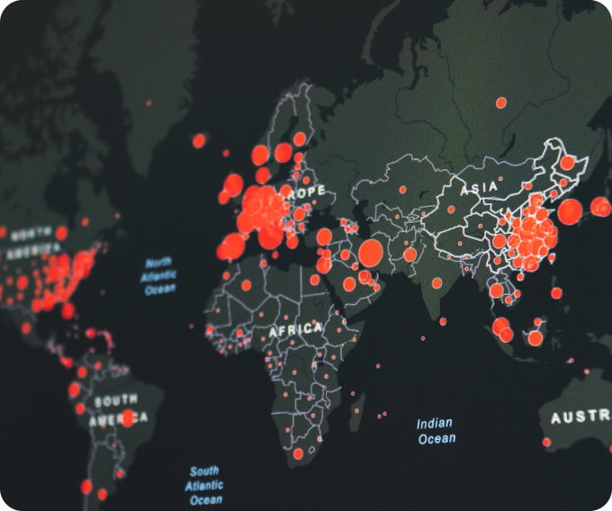

- Design without limits
Design
Style your map with lines, polygons, labels, icons, patterns, extrusions, raster & terrain with hundreds of options and a powerful expression language, not only controlling all visual aspects through the zoom range but having the freedom to changessss them at any time dynamically.
Learn more about design →- Design without limits
Navigation
Inletsky provides powerful routing engines, accurate, traffic-powered travel times, and intuitive turn-by-turn directions to help you build engaging navigation experiences.
more about navigate →- See what’s inside our studio
Studio
Inletsky Studio is like Photoshop, for maps. We give designers control over everything from colors and fonts, to 3D features and camera angles, to the pitch of the map as a car enters a turn.
know more about design →- Experience our maps
Maps
Our APIs, SDKs, and live updating map data give developers tools to build better mapping, navigation, and search experiences across platforms.
more about maps →- Tell us what to explore
Search
Search and geocoding is tied to everything we build — maps, navigation, AR — and underlies every app that helps humans explore their world.
discover search →Tell us what to explore
Testimonials
Search and geocoding is tied to everything we build — maps, navigation, AR — and underlies every app that helps humans explore their world.
- The vision behind Inletsky
Vision
The Inletsky Vision SDK describes every curb, lane, street sign, and road hazard it sees as data. Developers use the SDK's AI-powered semantic segmentation, object detection, and classification to deliver precise navigation guidance, display driver assistance alerts, and detect and map road incidents.
Discover Vision →- Your data is our responsibility
Data
Our data is powered by hundreds of data sources, and a distributed global users base of more than half a billion monthly active users.
more about data →
- Our Newest Product
Atlas
With Atlas, you can self-host Inletsky maps and geocoding APIs, Streets, Satellite, and Terrain tilesets, and Inletsky Studio on your network, behind a firewall, or even air-gapped. Use Atlas to power on-premises applications using Inletsky GL JS v2 and Inletsky Maps SDKs for iOS and Android.
Try atlas →Question people often asks
FAQs
What is Inletsky GL JS?
With Atlas, you can self-host Inletsky maps and geocoding APIs, Streets, Satellite, and Terrain tilesets, and Inletsky Studio on your network, behind a firewall, or even air-gapped. Use Atlas to power on-premises applications using Inletsky GL JS v2 and Inletsky Maps SDKs for iOS and Android.